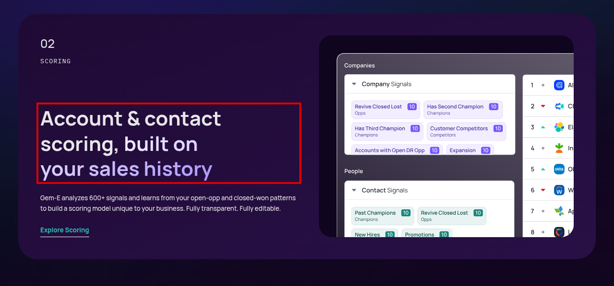
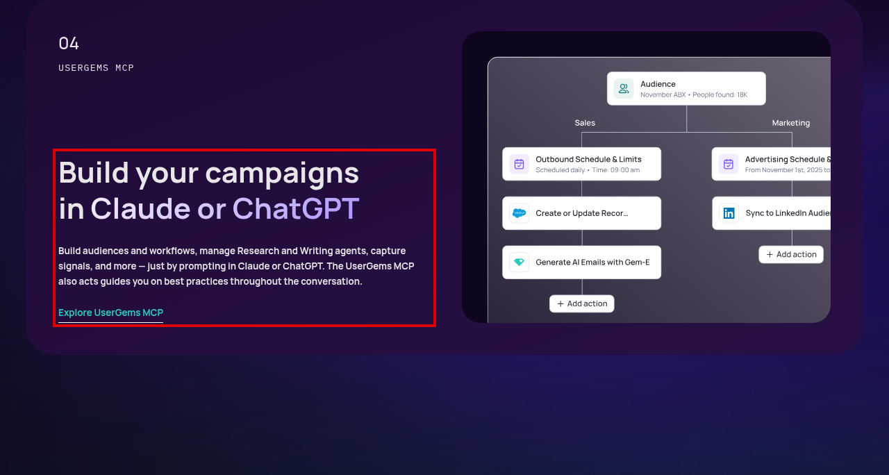
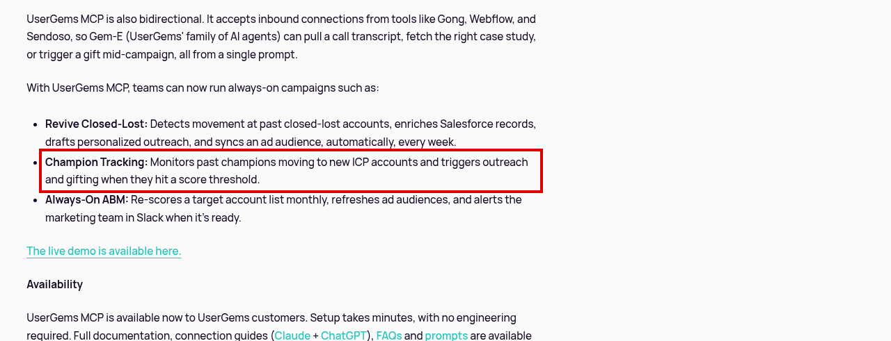
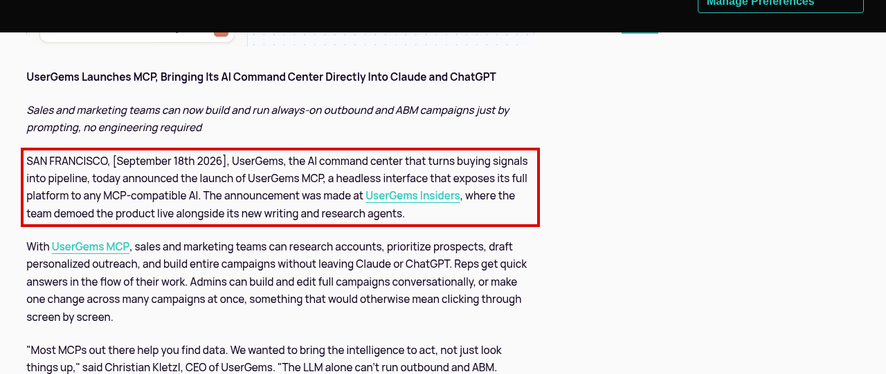
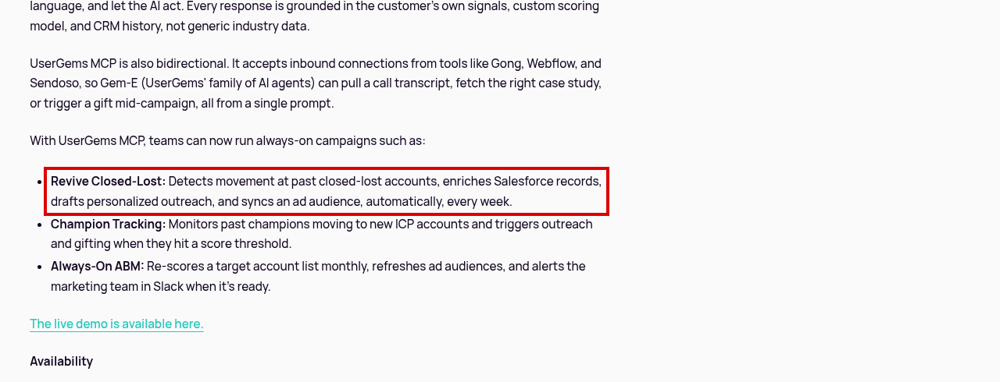
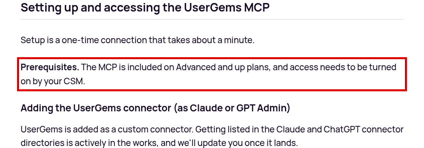
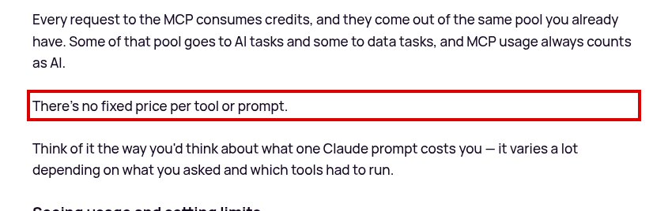

UserGems
The AI Command Center for Outbound and ABMusergems.com · 2026-10-18
Threat to Sales Navigator's moats
quotedtheir exact words · ✔ verified ◐ third-party ? unverified ✖ gap ◇ our inference · Levels: highmedlownone
Evidence gallery (click to enlarge or play)
 ▶ 1:20
▶ 1:20Competitor review: CRM-mapped past buyers, Slack alerts; pricing framed ~$30K/yr; 'best with Salesforce'
competitor

Passage on public page (red box): "Account & contact scoring, built on your sales history"

Passage on public page (red box): "Build your campaigns in Claude or ChatGPT Build audiences and workflows, manage Research and Writing agents, capture signals, and more — just by prompting in Claude or ChatGPT. The UserGems MCP also acts guides you on be"

Passage on public page (red box): "Champion Tracking: Monitors past champions moving to new ICP accounts and triggers outreach and gifting when they hit a score threshold."

Passage on public page (red box): "SAN FRANCISCO, [September 18th 2026], UserGems, the AI command center that turns buying signals into pipeline, today announced the launch of UserGems MCP, a headless interface that exposes its full platform to any MCP-co"

Passage on public page (red box): "Revive Closed-Lost: Detects movement at past closed-lost accounts, enriches Salesforce records, drafts personalized outreach, and syncs an ad audience, automatically, every week."
Passage on public page (red box): "Revive Closed-Lost: Detects movement at past closed-lost accounts, enriches Salesforce records, drafts personalized outreach, and syncs an ad audience, automatically, every week."

MCP plan gate: "Prerequisites. The MCP is included on Advanced and up plans, and access needs to be turned on by your CSM."

Variable MCP credit cost: "There's no fixed price per tool or prompt."
Lifecycle scorecard (full matrix)
| Stage | Score | Evidence · confidence | Claim | Evidence |
|---|---|---|---|---|
| ICP & account selection | 3 | vendor docs/demo video · low | Scoring; account & contact discovery | usergems.com · 2026-10-18 |
| Lead discovery & search | 3 | vendor docs/demo video · low | Contact discovery agents | usergems.com · 2026-10-18 |
| Contact data accuracy & enrichment | gap | gap · n/a | No evidence found in dossiers or public sources reviewed | no source |
| Buying signals & timing | 5 | vendor docs/demo video · med | Signals core; always-on campaigns | usergems.com · 2026-10-18usergems.com · 2026-10-18 |
| Warm path & relationships | 3 | vendor docs/demo video · low | Champion tracking: past champions at new ICP accounts | usergems.com · 2026-10-18 |
| Account research & personalization | 4 | vendor docs/demo video · low | Research and writing agents | usergems.com · 2026-10-18 |
| Outreach execution | 3 | vendor docs/demo video · low | Drafts outreach, ad audiences; send path via integrations | usergems.com · 2026-10-18 |
| CRM sync & data hygiene | 3 | vendor docs/demo video · low | Enriches Salesforce records | usergems.com · 2026-10-18 |
| Pipeline & deal management | gap | gap · n/a | No evidence found in dossiers or public sources reviewed | no source |
| Expansion & champion tracking | 5 | vendor docs/demo video · low | Champion Tracking and Revive Closed-Lost plays | usergems.com · 2026-10-18 |
| API & MCP access | 2 | vendor docs/demo video · med | API: No public API reference found. MCP: Yes, mcp.usergems.com. Gate: Advanced and up; turned on by CSM. Limits: not published. Credits: Every MCP request consumes AI credits; no fixed price per tool; admin weekly per-user limit. Agents limited separately: Credit-based weekly per-user caps. | help.usergems.com · 2026-10-18 |
Full dossier
UserGems dossier (seen 2026-10-18 PT, public sources only; scoped to overlap with SN prospecting, signals, and relationship workflows)
Positioning
The AI Command Center for Outbound and ABM
(usergems.com · 2026-10-18, 2026-10-18). the AI command center that turns buying signals into pipeline
(MCP release, 2026-09-18). ✔ verified
ICP
Mid-market and enterprise outbound and ABM teams on Salesforce (pricing includes Salesforce sandbox). ◇ our inference
Product surface
Signals (incl. job changes and champion tracking), Research and Account & Contact Discovery agents, Scoring, Personalization/Writing agent, Workflows, Advertising, MCP (homepage nav). Gem-E agent family. ◇ our inference
Pricing (usergems.com · 2026-10-18, 2026-10-18) ✔ verified
Core $40,000/yr (4,000,000 credits), Advanced $75,000/yr (10,000,000 credits), Elite $150,000/yr. Unlimited admin and end users. Implementation fee $3k/$5k/$10k. Optional retroactive job-change leads $3k. Money back guarantee if you don't see ROI in closed won revenue.
◇ our inference
Launches, last 12 months
2026-09-18 UserGems MCP (Claude/ChatGPT, bidirectional), plus research and writing agents (usergems.com · 2026-10-18). ✔ verified
Funding / headcount: GAP. Open roles: Greenhouse board usergems shows 4 (2026-10-18). Read: lean. ✖ gap
vs SN
High overlap. Job-change and champion tracking are SN's core lead alerts
and saved-lead use case. UserGems turns them into automated campaigns, including closed-lost revival. ◇ our inference
AI / agent lens
Gem-E agents through MCP. Unlimited seats with platform credits, an annual commitment, and an ROI guarantee (close to outcome pricing). ◇ our inference